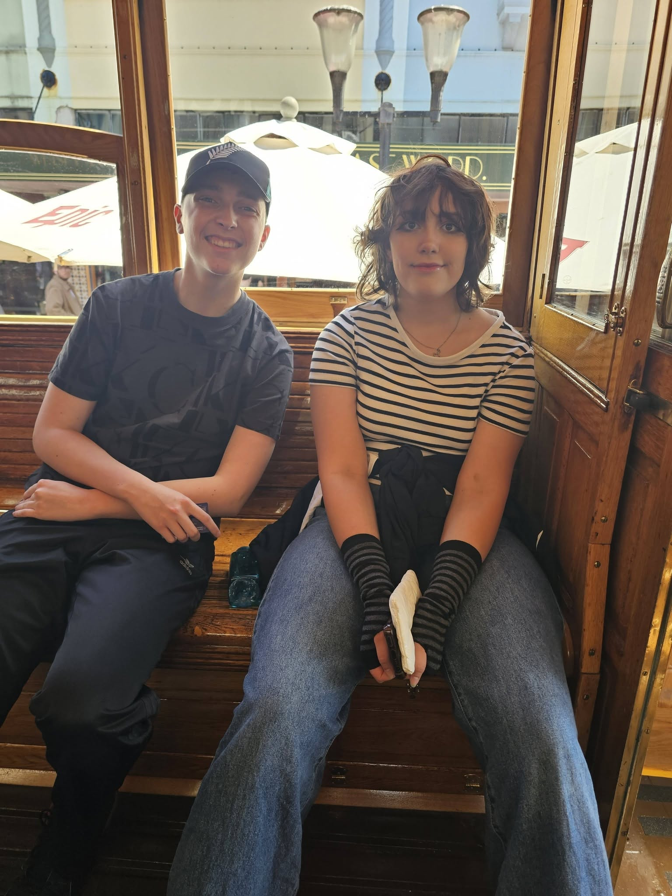
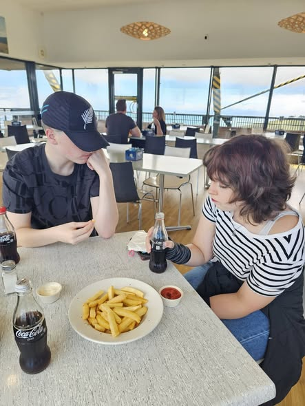
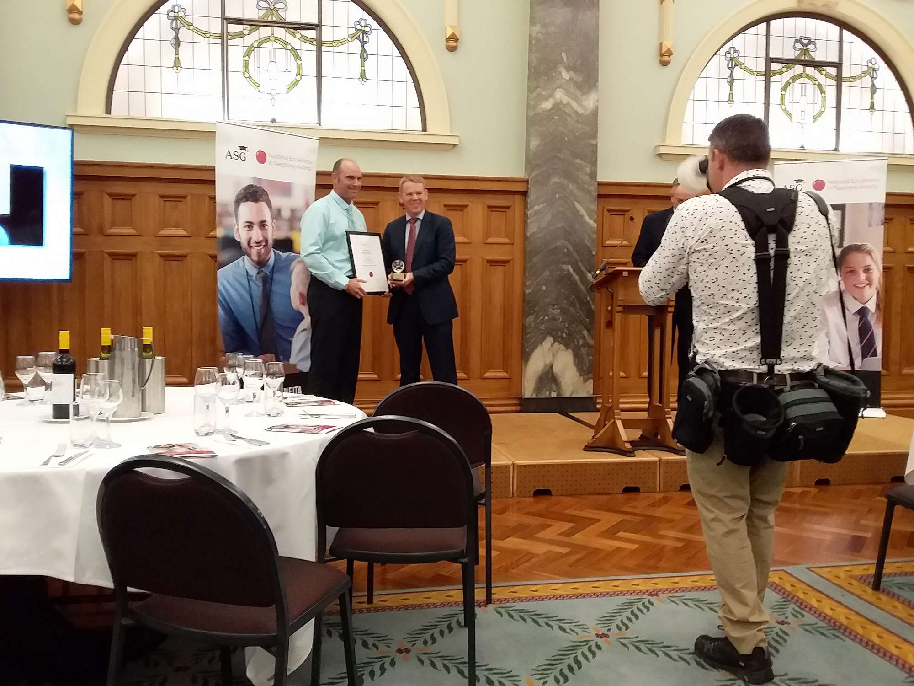
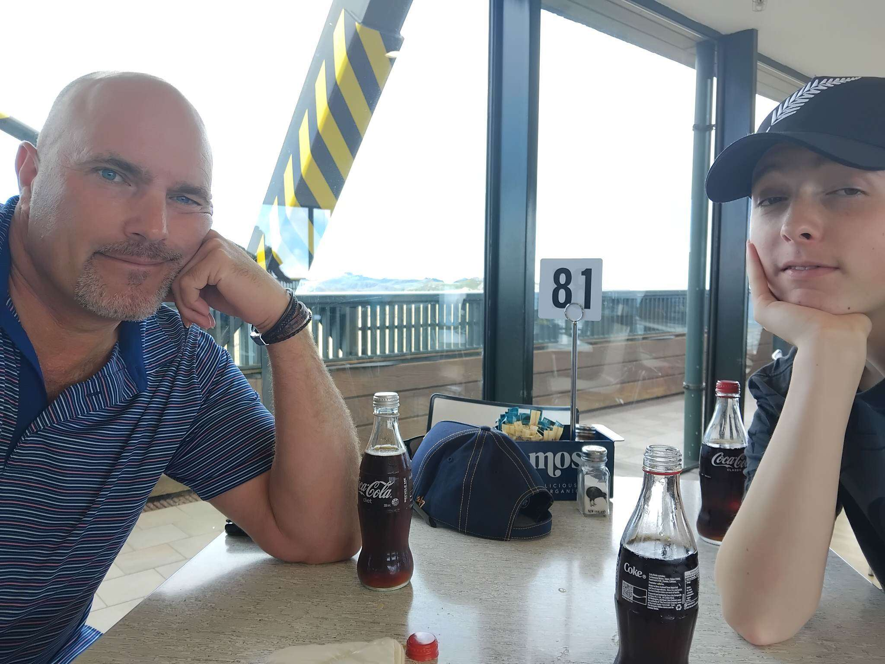
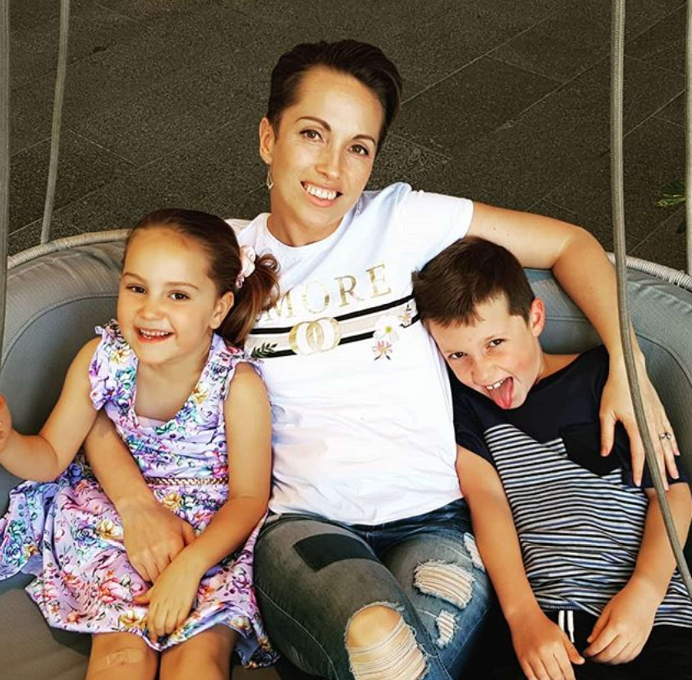
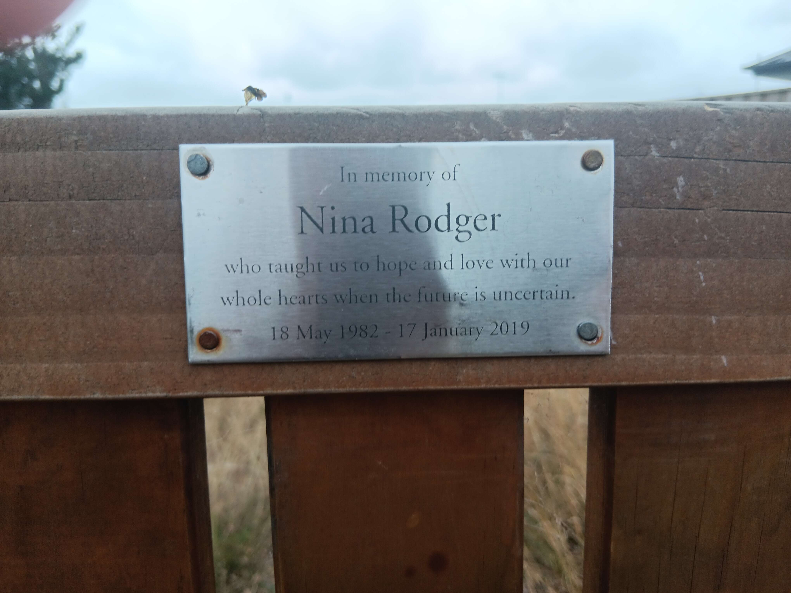
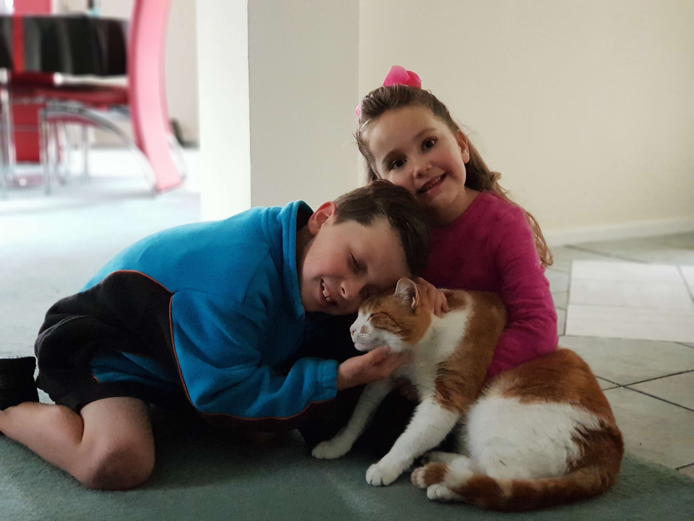
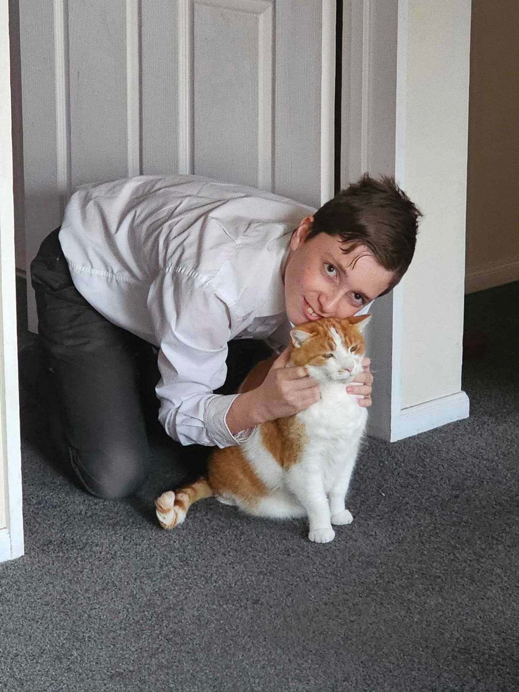

My Family:
My family currently consists of me, my dad, and my sister, following my mum passing in 2019 and my cat passing in 2024.
My sister Valentina is currently in year 8 here at Middleton after arriving in year 4, the same time as me. She is a huge fan of Art and loves watching both anime and when the new season arrives, the Rookie.


My dad, Bruce Rodger, works at Avonhead School as the head of Year 7/8. He has been teaching many years at many different schools with it being his 12th year at Avonhead now. In 2019 he also won the 'Excellence in Teaching' award given to him by Chris Hipkins.


My mum, Nina Rodger, created Complete Outdoors in 2006 which is now run by her father Malcolm Bell. While she was alive she loved to help with different events and charities trying to share God's goodness with the people of NZ. Because of this, after she passed, my first school (Rolleston Christian School) ended up building a swingchair in rememberance which you can still find today!


My cat Toodles was a inspiration while picking something to be identified online through my profile. Instead of taking his name for it I often use an orange cat from my game to be recognized until my friend Marica ended up Crocheting a version of that icon which is the logo I have used in the top right of the website!

